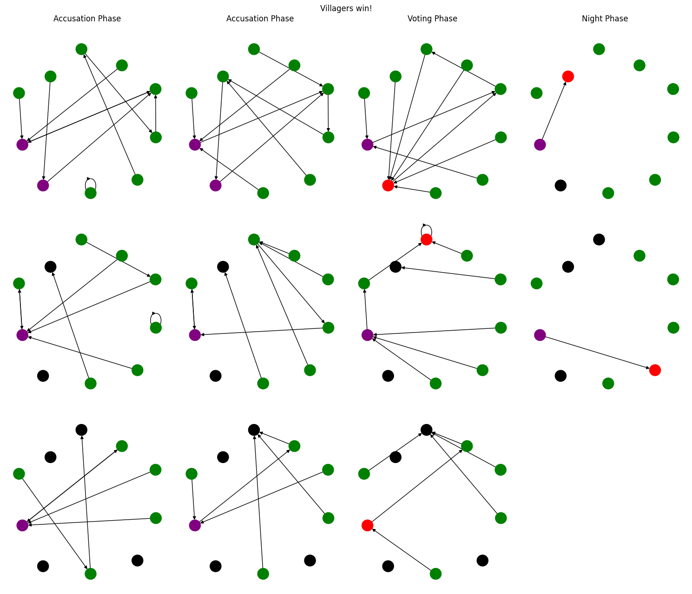

Show code cell content
import numpy as np
import torch
import sys
sys.path.append('../')
from voting_games.werewolf_env_v0 import plurality_env, pare, Phase, Roles
import random
import copy
from tqdm import tqdm
from collections import Counter
import matplotlib.pyplot as plt
from notebooks.learning_agents.models import ActorCriticAgent
from notebooks.learning_agents.utils import play_recurrent_game
from notebooks.learning_agents.static_agents import random_approval_wolf, random_plurality_wolf
import notebooks.learning_agents.stats as indicators
import networkx as nx
/root/.local/lib/python3.10/site-packages/tqdm/auto.py:22: TqdmWarning: IProgress not found. Please update jupyter and ipywidgets. See https://ipywidgets.readthedocs.io/en/stable/user_install.html
from .autonotebook import tqdm as notebook_tqdm
Replay visualization#
We have ways to print out game replays, but humans tend to identify patterns quicker when they can visualize the data. By plotting the game in a graph format, we give the reader yet another way to consume game replays
First we play a couple of games
env = plurality_env(num_agents=10, werewolves=2, num_accusations=2)
observations, _, _, _, _ = env.reset()
obs_size= env.convert_obs(observations['player_0']['observation']).shape[-1]
untrained_plurality_agent = ActorCriticAgent({"rec_hidden_size": 128,
"rec_layers": 1,
"joint_mlp_size": 128,
"split_mlp_size": 128,
"num_votes": 1,
"approval_states": 10},
num_players=10,
obs_size=obs_size)
trained_plurality_agent = ActorCriticAgent({"rec_hidden_size": 128,
"rec_layers": 1,
"joint_mlp_size": 128,
"split_mlp_size": 128,
"num_votes": 1,
"approval_states": 10},
num_players=10,
obs_size=obs_size)
trained_plurality_agent.load_state_dict(torch.load("stored_agents/lstm_first_no_one_hot_128_128/plurality_agent_10_score_46"))
# random_agent = None
trained_plurality_wins, trained_plurality_replays = play_recurrent_game(env, random_plurality_wolf, trained_plurality_agent, num_times=10, hidden_state_size=128, voting_type="plurality")
Then we use this very unoptimized function to pull out graphs for each phase in each day, and color nodes and edges accordingly. Purple is a wolf, Green is a villager. Red means you died this phase, Black means the agent was already dead during the phase.
def viz_replay(replay):
#[wolf for wolf in stage["werewolves"]]
wolves = replay[0]['werewolves']
villagers = replay[0]['villagers']
winners = None
day_info = {}
color_map = {}
pos = None
vote_rounds = []
night_rounds = []
for i, phase in enumerate(replay):
if phase["phase"] == Phase.VOTING:
vote_rounds.append(phase)
if phase["phase"] == Phase.NIGHT:
night_rounds.append(phase)
if i == 0:
# setup the first graph for the position and color map
G = nx.DiGraph()
wolf_nodes = [(id, {'color': 'purple'}) for id in wolves]
villager_nodes = [(id, {'color': 'green'}) for id in villagers]
G.add_nodes_from(wolf_nodes)
G.add_nodes_from(villager_nodes)
if pos == None:
pos = nx.spring_layout(G)
continue
if phase['day'] not in day_info.keys():
day_info[phase['day']] = []
color_map[phase['day']] = []
#
if phase["phase"] == Phase.VOTING:
if len(vote_rounds) == 1:
dead_players = []
# dead_wolves = []
executed_this_round = phase['executed'][0]
killed_this_round = []
else:
dead_players = list((set(phase['executed']) & set(vote_rounds[-2]['executed'])) | set(phase['killed']))
# dead_wolves = list(set(wolves) & set(dead_players))
executed_this_round = list(set(phase['executed']) - set(vote_rounds[-2]['executed']))[0]
killed_this_round = []
elif phase["phase"] == Phase.NIGHT:
if len(night_rounds) == 1:
dead_players = phase['executed']
executed_this_round = []
killed_this_round = phase['killed']
else:
dead_players = list((set(phase['killed']) & set(night_rounds[-2]['killed'])) | set(phase['executed']))
executed_this_round = []
killed_this_round = list(set(phase['killed']) - set(night_rounds[-2]['killed']))[0]
else:
dead_players = list(set(phase['executed']) | set(phase['killed']))
executed_this_round = []
killed_this_round = []
G = nx.DiGraph()
wolf_nodes = [(id, {'color': 'purple'}) for id in wolves]
villager_nodes = [(id, {'color': 'green'}) for id in villagers]
G.add_nodes_from(wolf_nodes)
G.add_nodes_from(villager_nodes)
graph_color_map = []
for node in G:
if 'color' in G.nodes[node]:
if node in dead_players:
graph_color_map.append('black')
elif node in executed_this_round or node in killed_this_round:
graph_color_map.append('red')
else:
graph_color_map.append(G.nodes[node]['color'])
else:
graph_color_map.append('blue')
# edges for plurality
if phase["phase"] == Phase.NIGHT:
# hide villager votes
edges = [(voter, f'player_{target}') for voter, target in phase['votes'].items() if target != len(wolves) + len(villagers) and voter not in villagers]
else:
edges = [(voter, f'player_{target}') for voter, target in phase['votes'].items() if target != len(wolves) + len(villagers)]
G.add_edges_from(edges)
day_info[phase['day']].append(G)
color_map[phase['day']].append(graph_color_map)
return day_info, pos, color_map
viz_info, pos, cmap = viz_replay(trained_plurality_replays[0])
This loose piece of code takes in the output of our function and actually draws out the game in a matplotlib subplot graph with rows representing incrementing days, and columns representing incrementing phases.
# TODO: clean this up, maybe use newer matplotlib 3.4 subplots and put it in the viz_info function
day_num = len(viz_info.keys())
phases_per_day = max([len(val) for val in viz_info.values()])
phase_map = list(range(phases_per_day))
phase_range_accusation = phase_map[0:-2]
fig, axs = plt.subplots(day_num,phases_per_day, figsize=(15,13), sharey=True, sharex=True)
for day in range(1,day_num+1):
# axs[day-1][0].annotate("Hello", (0.1,0.5) )
for j, graph in enumerate(viz_info[day]):
if day == 1:
if j in phase_range_accusation:
title = f'Accusation Phase'
elif j == phase_map[-2]:
title = f'Voting Phase'
elif j == phase_map[-1]:
title = f'Night Phase'
axs[day-1][j].set_title(title)
nx.draw(viz_info[day][j], pos, ax=axs[day-1][j], node_color=cmap[day][j])
axs[day-1][0].set_ylabel(f'Day {day}')
day_phase_lengths = [len(val) for val in viz_info.values()]
if day_phase_lengths[-1] < day_phase_lengths[-2]:
axs[-1][-1].axis('off')
plt.suptitle("Villagers win!")
else:
plt.suptitle("Wolves win!")
fig.tight_layout()
plt.show()
# TODO : Consider adding labels for each day
# fig.text(-0.02, 0.80, 'Day 1')
# fig.text(-0.02, 0.60, 'Day 2')
# fig.text(-0.02, 0.40, 'Day 3')
# fig.text(-0.02, 0.20, 'Day 4')
